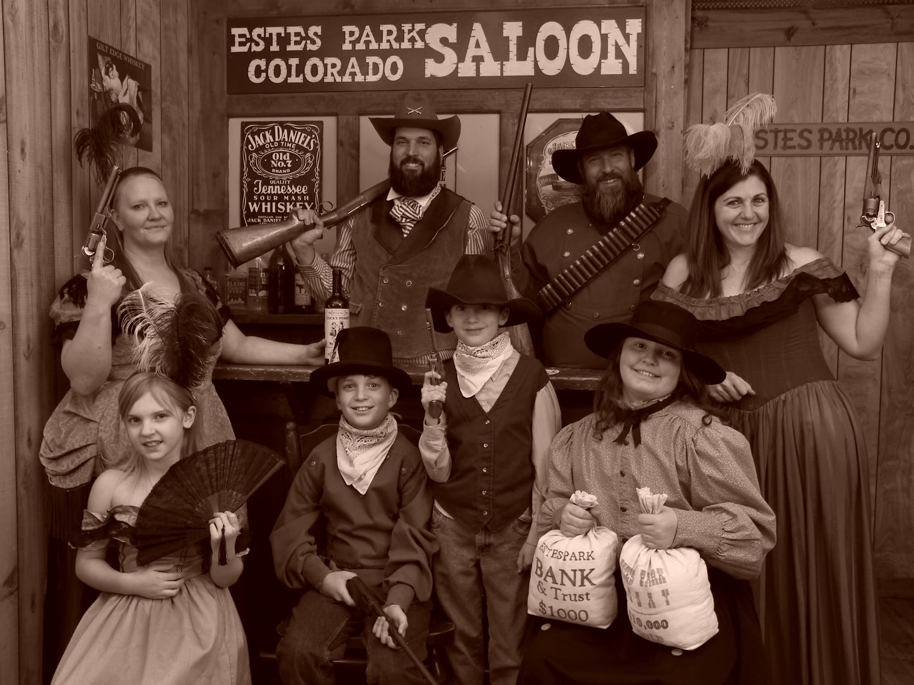

Memories Old Time Portraits
Choose costumes, dress up with friends or family and become part of your own Old West portrait session in downtown Estes Park.
Visit Official Website →
Make something, learn something, meet the animals, dress up, cook, create, tour or try something new. These are Colorado experiences where you become part of the story.
This collection is intentionally different from our Things to Do directory. Instead of simply visiting an attraction, these experiences invite you to take part — through classes, workshops, interactive tours, farm activities, creative adventures and guided experiences.
Creative experiences where the souvenir is something you made — or a memory you helped create.

Choose costumes, dress up with friends or family and become part of your own Old West portrait session in downtown Estes Park.
Visit Official Website →Learn the craft of designing and making footwear in a hands-on Colorado workshop setting.
Visit Official Website →Create your own souvenir through guided Colorado-inspired art experiences and workshops.
Visit Official Website →Get closer to Colorado agriculture through working farms, animals, demonstrations and farm-based learning.
A family-centered educational farm where visitors can connect with animals, outdoor play and farm life.
Visit Official Website →Hands-on recreational cheesemaking classes in a working dairy-goat-farm setting.
Visit Official Website →Find more farm tours, U-picks, hay rides, corn mazes, cheesemaking classes and agricultural experiences around the state.
Visit Website →Go beyond ordering from a menu with classes and experiences that teach you how Colorado flavors are made.
A farm-to-table teaching kitchen offering hands-on cooking classes on a working ranch.
Visit Official Website →Hands-on cooking experiences for adults, couples, kids and groups, guided by chef instructors.
Visit Official Website →Discover seasonal opportunities to learn where Colorado food comes from and how it is made.
Visit Website →Interactive ways to learn a skill, discover a craft or see how something works behind the scenes.
Experience Colorado history through mine tours, gold-panning opportunities and other interactive heritage activities.
Visit Website →Farm tours and agricultural programs offer a chance to meet producers and learn how food and fiber are grown.
Visit Website →Find guided experiences that turn a destination into a story, from cultural and historical tours to specialty experiences.
Visit Website →Guided adventures and skill-building activities that put you directly into Colorado's outdoor landscape.
Family-owned guided mountain biking adventures and skills clinics tailored to different experience levels.
Visit Official Website →Horseback riding, fishing, cattle roundups and other ranch activities offer immersive ways to experience Western traditions.
Visit Website →Discover guided outdoor experiences including horseback riding, paddling, climbing, biking and more.
Visit Website →We're looking for independent Colorado businesses, farms, makers, guides and creative places where visitors can participate instead of simply observe.
Suggest an Experience